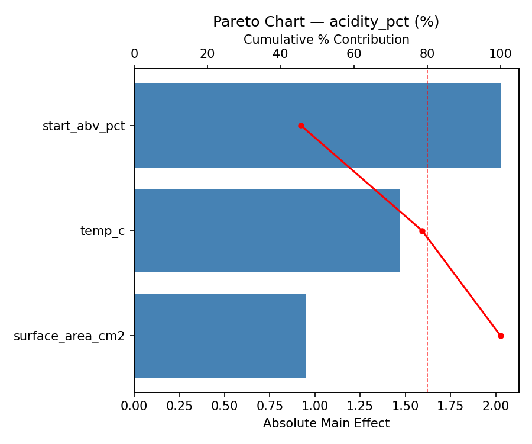
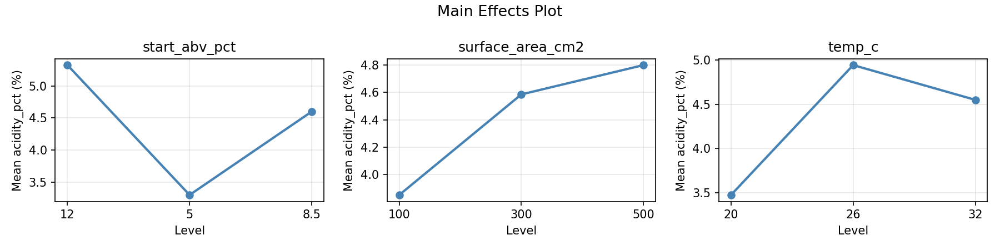
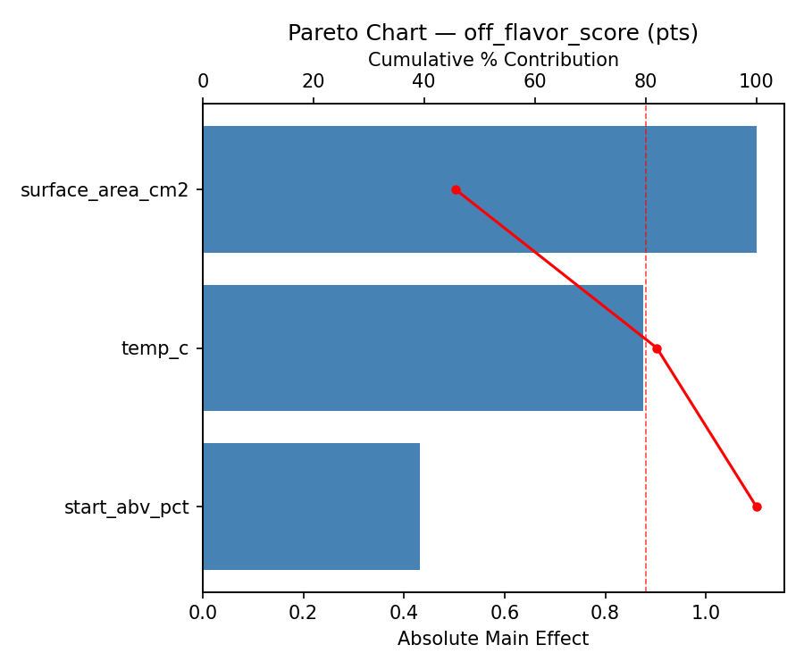
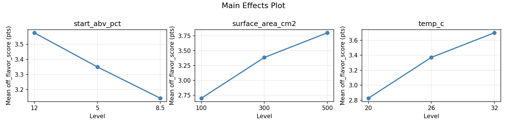
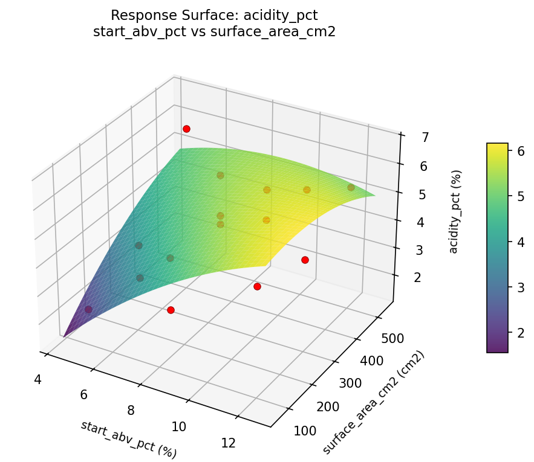
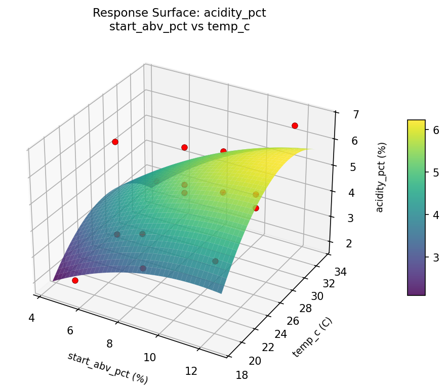
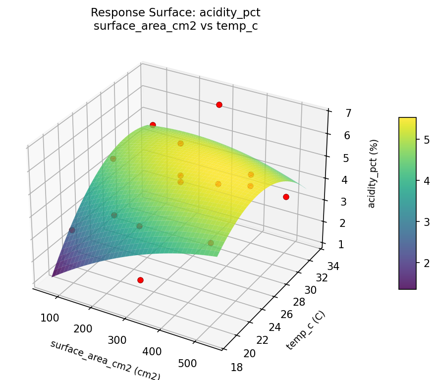
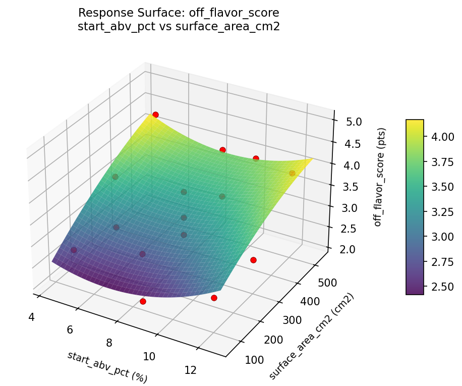
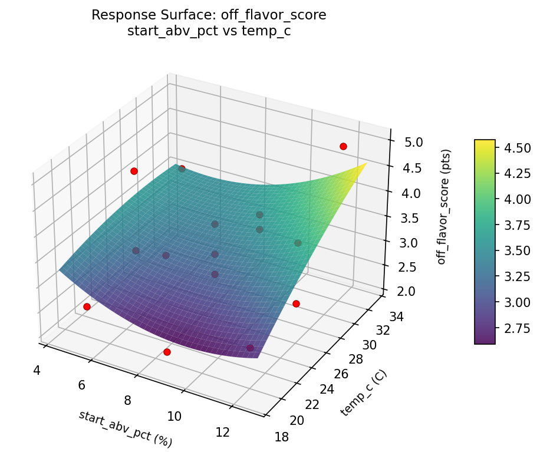
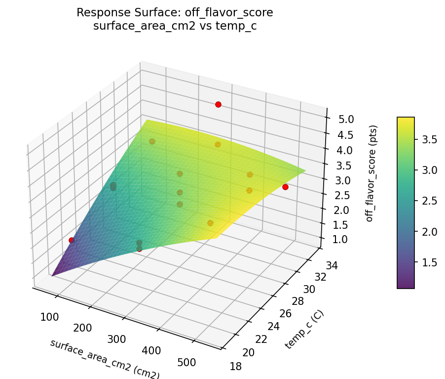

Summary
This experiment investigates vinegar mother cultivation. Box-Behnken design to maximize acetic acid production and minimize off-flavors by tuning starting ABV, surface area, and temperature.
The design varies 3 factors: start abv pct (%), ranging from 5 to 12, surface area cm2 (cm2), ranging from 100 to 500, and temp c (C), ranging from 20 to 32. The goal is to optimize 2 responses: acidity pct (%) (maximize) and off flavor score (pts) (minimize). Fixed conditions held constant across all runs include mother source = existing_culture, vessel = ceramic_crock.
A Box-Behnken design was chosen because it efficiently fits quadratic models with 3 continuous factors while avoiding extreme corner combinations — requiring only 15 runs instead of the 8 needed for a full factorial at two levels.
Quadratic response surface models were fitted to capture potential curvature and factor interactions. The RSM contour plots below visualize how pairs of factors jointly affect each response.
Key Findings
For acidity pct, the most influential factors were temp c (43.1%), surface area cm2 (29.1%), start abv pct (27.8%). The best observed value was 6.7 (at start abv pct = 8.5, surface area cm2 = 100, temp c = 32).
For off flavor score, the most influential factors were surface area cm2 (72.8%), start abv pct (18.7%), temp c (8.6%). The best observed value was 2.1 (at start abv pct = 8.5, surface area cm2 = 300, temp c = 26).
Recommended Next Steps
- Run confirmation experiments at the predicted optimal settings to validate the model.
- Consider whether any fixed factors should be varied in a future study.
Experimental Setup
Factors
| Factor | Low | High | Unit |
|---|
start_abv_pct | 5 | 12 | % |
surface_area_cm2 | 100 | 500 | cm2 |
temp_c | 20 | 32 | C |
Fixed: mother_source = existing_culture, vessel = ceramic_crock
Responses
| Response | Direction | Unit |
|---|
acidity_pct | ↑ maximize | % |
off_flavor_score | ↓ minimize | pts |
Configuration
{
"metadata": {
"name": "Vinegar Mother Cultivation",
"description": "Box-Behnken design to maximize acetic acid production and minimize off-flavors by tuning starting ABV, surface area, and temperature"
},
"factors": [
{
"name": "start_abv_pct",
"levels": [
"5",
"12"
],
"type": "continuous",
"unit": "%"
},
{
"name": "surface_area_cm2",
"levels": [
"100",
"500"
],
"type": "continuous",
"unit": "cm2"
},
{
"name": "temp_c",
"levels": [
"20",
"32"
],
"type": "continuous",
"unit": "C"
}
],
"fixed_factors": {
"mother_source": "existing_culture",
"vessel": "ceramic_crock"
},
"responses": [
{
"name": "acidity_pct",
"optimize": "maximize",
"unit": "%"
},
{
"name": "off_flavor_score",
"optimize": "minimize",
"unit": "pts"
}
],
"settings": {
"operation": "box_behnken",
"test_script": "use_cases/245_vinegar_mother/sim.sh"
}
}
Experimental Matrix
The Box-Behnken Design produces 15 runs. Each row is one experiment with specific factor settings.
| Run | start_abv_pct | surface_area_cm2 | temp_c |
|---|
| 1 | 8.5 | 100 | 20 |
| 2 | 8.5 | 300 | 26 |
| 3 | 12 | 300 | 32 |
| 4 | 12 | 300 | 20 |
| 5 | 8.5 | 300 | 26 |
| 6 | 8.5 | 300 | 26 |
| 7 | 5 | 300 | 32 |
| 8 | 12 | 100 | 26 |
| 9 | 8.5 | 100 | 32 |
| 10 | 12 | 500 | 26 |
| 11 | 5 | 300 | 20 |
| 12 | 8.5 | 500 | 32 |
| 13 | 5 | 100 | 26 |
| 14 | 5 | 500 | 26 |
| 15 | 8.5 | 500 | 20 |
Step-by-Step Workflow
1
Preview the design
$ python doe.py info --config use_cases/245_vinegar_mother/config.json
2
Generate the runner script
$ python doe.py generate --config use_cases/245_vinegar_mother/config.json \
--output use_cases/245_vinegar_mother/results/run.sh --seed 42
3
Execute the experiments
$ bash use_cases/245_vinegar_mother/results/run.sh
4
Analyze results
$ python doe.py analyze --config use_cases/245_vinegar_mother/config.json
5
Get optimization recommendations
$ python doe.py optimize --config use_cases/245_vinegar_mother/config.json
6
Multi-objective optimization
With 2 competing responses, use --multi to find the best compromise via Derringer–Suich desirability.
$ python doe.py optimize --config use_cases/245_vinegar_mother/config.json --multi
7
Generate the HTML report
$ python doe.py report --config use_cases/245_vinegar_mother/config.json \
--output use_cases/245_vinegar_mother/results/report.html
Features Exercised
| Feature | Value |
|---|
| Design type | box_behnken |
| Factor types | continuous (all 3) |
| Arg style | double-dash |
| Responses | 2 (acidity_pct ↑, off_flavor_score ↓) |
| Total runs | 15 |
Analysis Results
Generated from actual experiment runs using the DOE Helper Tool.
Response: acidity_pct
Top factors: temp_c (43.1%), surface_area_cm2 (29.1%), start_abv_pct (27.8%).
Pareto Chart

Main Effects Plot

Response: off_flavor_score
Top factors: surface_area_cm2 (72.8%), start_abv_pct (18.7%), temp_c (8.6%).
Pareto Chart

Main Effects Plot

Response Surface Plots
3D surfaces fitted with quadratic RSM. Red dots are observed data points.
acidity pct start abv pct vs surface area cm2

acidity pct start abv pct vs temp c

acidity pct surface area cm2 vs temp c

off flavor score start abv pct vs surface area cm2

off flavor score start abv pct vs temp c

off flavor score surface area cm2 vs temp c

Multi-Objective Optimization
When responses compete, Derringer–Suich desirability finds the best compromise.
Each response is scaled to a 0–1 desirability, then combined via a weighted geometric mean.
Overall Desirability
D = 0.7012
Per-Response Desirability
| Response | Weight | Desirability | Predicted | Dir |
|---|
acidity_pct |
1.0 |
|
4.90 0.6136 4.90 % |
↑ |
off_flavor_score |
1.5 |
|
2.70 0.7665 2.70 pts |
↓ |
Recommended Settings
| Factor | Value |
|---|
start_abv_pct | 8.5 % |
surface_area_cm2 | 100 cm2 |
temp_c | 32 C |
Source: from observed run #6
Trade-off Summary
Sacrifice = how much worse than single-objective best.
| Response | Predicted | Best Observed | Sacrifice |
|---|
off_flavor_score | 2.70 | 2.10 | +0.60 |
Top 3 Runs by Desirability
| Run | D | Factor Settings |
|---|
| #5 | 0.6922 | start_abv_pct=12, surface_area_cm2=500, temp_c=26 |
| #15 | 0.6461 | start_abv_pct=8.5, surface_area_cm2=500, temp_c=20 |
Model Quality
| Response | R² | Type |
|---|
off_flavor_score | 0.1802 | linear |
Full Multi-Objective Output
============================================================
MULTI-OBJECTIVE OPTIMIZATION
Method: Derringer-Suich Desirability Function
============================================================
Overall desirability: D = 0.7012
Response Weight Desirability Predicted Direction
---------------------------------------------------------------------
acidity_pct 1.0 0.6136 4.90 % ↑
off_flavor_score 1.5 0.7665 2.70 pts ↓
Recommended settings:
start_abv_pct = 8.5 %
surface_area_cm2 = 100 cm2
temp_c = 32 C
(from observed run #6)
Trade-off summary:
acidity_pct: 4.90 (best observed: 6.70, sacrifice: +1.80)
off_flavor_score: 2.70 (best observed: 2.10, sacrifice: +0.60)
Model quality:
acidity_pct: R² = 0.0945 (linear)
off_flavor_score: R² = 0.1802 (linear)
Top 3 observed runs by overall desirability:
1. Run #6 (D=0.7012): start_abv_pct=8.5, surface_area_cm2=100, temp_c=32
2. Run #5 (D=0.6922): start_abv_pct=12, surface_area_cm2=500, temp_c=26
3. Run #15 (D=0.6461): start_abv_pct=8.5, surface_area_cm2=500, temp_c=20
Full Analysis Output
=== Main Effects: acidity_pct ===
Factor Effect Std Error % Contribution
--------------------------------------------------------------
temp_c 1.7036 0.3676 43.1%
surface_area_cm2 1.1500 0.3676 29.1%
start_abv_pct 1.0964 0.3676 27.8%
=== ANOVA Table: acidity_pct ===
Source DF SS MS F p-value
-----------------------------------------------------------------------------
start_abv_pct 2 3.2855 1.6428 70.405 0.0000
surface_area_cm2 2 4.0473 2.0237 86.729 0.0000
temp_c 2 7.4455 3.7228 159.547 0.0000
Lack of Fit 6 13.5522 2.2587 96.802 0.0103
Pure Error 2 0.0467 0.0233
Error 8 13.5989 0.0233
Total 14 28.3773 2.0270
=== Summary Statistics: acidity_pct ===
start_abv_pct:
Level N Mean Std Min Max
------------------------------------------------------------
12 4 4.6500 1.1269 3.2000 5.9000
5 4 3.6750 1.5108 1.9000 5.4000
8.5 7 4.7714 1.5510 2.3000 6.7000
surface_area_cm2:
Level N Mean Std Min Max
------------------------------------------------------------
100 4 5.0500 1.2477 3.4000 6.4000
300 7 3.9000 1.1790 1.9000 5.0000
500 4 4.8000 1.9425 2.3000 6.7000
temp_c:
Level N Mean Std Min Max
------------------------------------------------------------
20 4 4.5500 2.3728 1.9000 6.7000
26 7 5.0286 0.5090 4.3000 5.9000
32 4 3.3250 0.9106 2.3000 4.5000
=== Main Effects: off_flavor_score ===
Factor Effect Std Error % Contribution
--------------------------------------------------------------
surface_area_cm2 0.6679 0.2051 72.8%
start_abv_pct 0.1714 0.2051 18.7%
temp_c 0.0786 0.2051 8.6%
=== ANOVA Table: off_flavor_score ===
Source DF SS MS F p-value
-----------------------------------------------------------------------------
start_abv_pct 2 0.0755 0.0378 0.453 0.6509
surface_area_cm2 2 1.1427 0.5713 6.856 0.0184
temp_c 2 0.0230 0.0115 0.138 0.8729
Lack of Fit 6 7.4294 1.2382 14.859 0.0644
Pure Error 2 0.1667 0.0833
Error 8 7.5960 0.0833
Total 14 8.8373 0.6312
=== Summary Statistics: off_flavor_score ===
start_abv_pct:
Level N Mean Std Min Max
------------------------------------------------------------
12 4 3.3250 1.0626 2.1000 4.4000
5 4 3.2000 0.7024 2.5000 3.9000
8.5 7 3.3714 0.8056 2.7000 5.0000
surface_area_cm2:
Level N Mean Std Min Max
------------------------------------------------------------
100 4 3.3500 0.5802 2.8000 3.9000
300 7 3.0571 0.6705 2.1000 4.0000
500 4 3.7250 1.1529 2.7000 5.0000
temp_c:
Level N Mean Std Min Max
------------------------------------------------------------
20 4 3.3500 1.3178 2.1000 5.0000
26 7 3.2714 0.6525 2.7000 4.4000
32 4 3.3500 0.5916 2.8000 4.0000
Optimization Recommendations
=== Optimization: acidity_pct ===
Direction: maximize
Best observed run: #3
start_abv_pct = 8.5
surface_area_cm2 = 100
temp_c = 32
Value: 6.7
RSM Model (linear, R² = 0.2914, Adj R² = 0.0982):
Coefficients:
intercept +4.4467
start_abv_pct -0.2250
surface_area_cm2 +0.5500
temp_c +0.8250
RSM Model (quadratic, R² = 0.5873, Adj R² = -0.1556):
Coefficients:
intercept +3.6667
start_abv_pct -0.2250
surface_area_cm2 +0.5500
temp_c +0.8250
start_abv_pct*surface_area_cm2 +0.5250
start_abv_pct*temp_c -0.6750
surface_area_cm2*temp_c -0.4750
start_abv_pct^2 -0.0958
surface_area_cm2^2 +0.6042
temp_c^2 +0.9542
Curvature analysis:
temp_c coef=+0.9542 convex (has a minimum)
surface_area_cm2 coef=+0.6042 convex (has a minimum)
start_abv_pct coef=-0.0958 negligible curvature
Notable interactions:
start_abv_pct*temp_c coef=-0.6750 (antagonistic)
start_abv_pct*surface_area_cm2 coef=+0.5250 (synergistic)
surface_area_cm2*temp_c coef=-0.4750 (antagonistic)
Predicted optimum (from linear model, at observed points):
start_abv_pct = 8.5
surface_area_cm2 = 500
temp_c = 32
Predicted value: 5.8217
Surface optimum (via L-BFGS-B, linear model):
start_abv_pct = 5
surface_area_cm2 = 500
temp_c = 32
Predicted value: 6.0467
Model quality: Weak fit — consider adding center points or using a different design.
Factor importance:
1. temp_c (effect: 1.7, contribution: 52.9%)
2. surface_area_cm2 (effect: 1.1, contribution: 33.4%)
3. start_abv_pct (effect: 0.5, contribution: 13.7%)
=== Optimization: off_flavor_score ===
Direction: minimize
Best observed run: #1
start_abv_pct = 8.5
surface_area_cm2 = 300
temp_c = 26
Value: 2.1
RSM Model (linear, R² = 0.3338, Adj R² = 0.1521):
Coefficients:
intercept +3.3133
start_abv_pct -0.3750
surface_area_cm2 -0.3250
temp_c +0.3500
RSM Model (quadratic, R² = 0.6328, Adj R² = -0.0281):
Coefficients:
intercept +3.0000
start_abv_pct -0.3750
surface_area_cm2 -0.3250
temp_c +0.3500
start_abv_pct*surface_area_cm2 +0.1750
start_abv_pct*temp_c -0.2750
surface_area_cm2*temp_c -0.1750
start_abv_pct^2 -0.3375
surface_area_cm2^2 +0.5125
temp_c^2 +0.4125
Curvature analysis:
surface_area_cm2 coef=+0.5125 convex (has a minimum)
temp_c coef=+0.4125 convex (has a minimum)
start_abv_pct coef=-0.3375 concave (has a maximum)
Predicted optimum (from linear model, at observed points):
start_abv_pct = 5
surface_area_cm2 = 300
temp_c = 32
Predicted value: 4.0383
Surface optimum (via L-BFGS-B, linear model):
start_abv_pct = 12
surface_area_cm2 = 500
temp_c = 20
Predicted value: 2.2633
Model quality: Weak fit — consider adding center points or using a different design.
Factor importance:
1. surface_area_cm2 (effect: 0.8, contribution: 35.2%)
2. start_abv_pct (effect: 0.8, contribution: 33.0%)
3. temp_c (effect: 0.8, contribution: 31.8%)